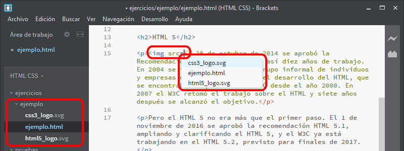
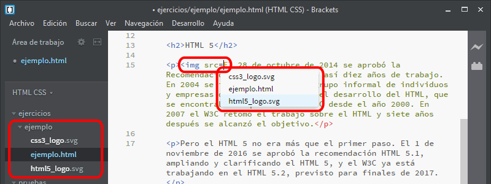
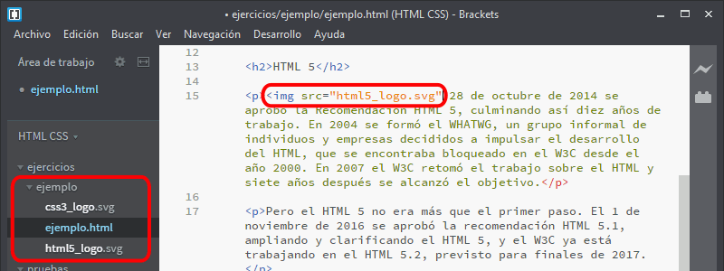
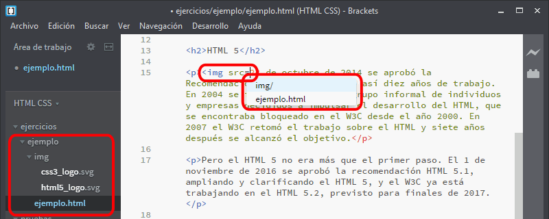
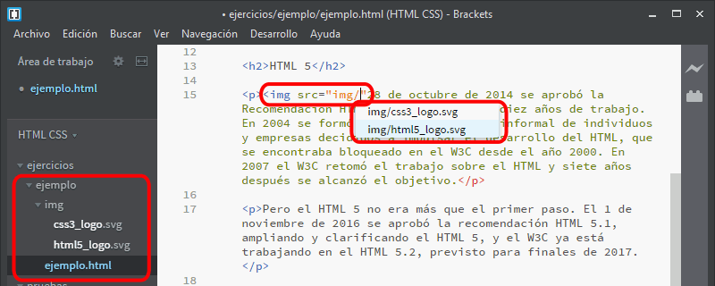
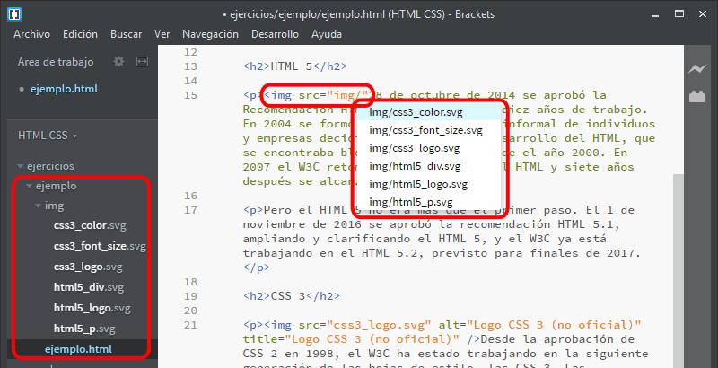
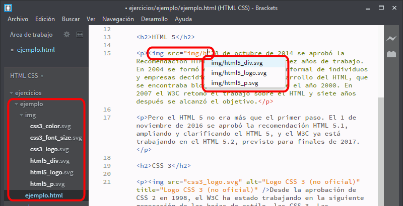
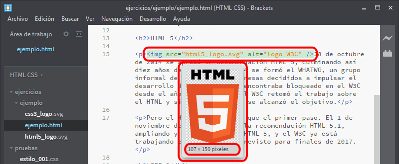
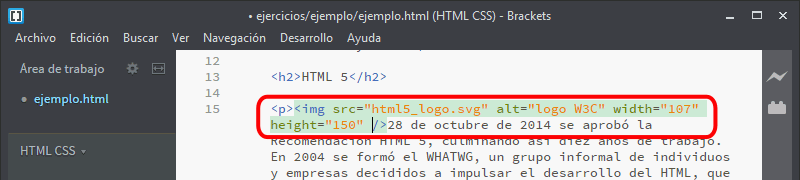

Brackets facilita la inserción de rutas de archivos. Al escribir el atributo que requiere una ruta, se muestran los archivos deel directorio donde se encuentra el archivo que estamos editando:

Las flechas arriba y abajo permiten desplazarse por la lista hasta el archivo deseado:

Al pulsar Intro, se inserta el nombre del archivo:

En caso de que hayan subdirectorios en la carpeta, también se muestran en la lista.

Al pulsar Intro sobre el nombre del directorio, se inserta en la página el nombre del directorio y la lista muestra los archivos del directorio.

En caso de que haya muchos archivos en el subdirectorio...

Escribiendo letras, la lista de archivos muestra solamente los archivos que empiezan por esas letras:

Una vez insertada una imagen, conviene indicar el tamaño de la imagen con los atributos width y height. Para saber el tamaño de la imagen insertada, basta con hacer clic en la imagen. Brackets mostrará una miniatura de la imagen y su tamaño:

Los atributos no se insertan automáticamente, se deben escribir manualmente.

Si se pulsa Ctrl+E cuando el cursor está en algunos elementos se activa la edición rápida. La edición rápida también se puede activar haciendo clic derecho sobre algunos elementos y eligiendo la opción Edición rápida.
Por completar
Por completar
Por completar
En la vista previa en el navegador se resalta el elemento que se está editando en Brackets, pero la vista previa no avanza o retrocede automáticamente cuando se edita un elemento posterior o anterior que antes no estaba a la vista.
Brackets issue #9938